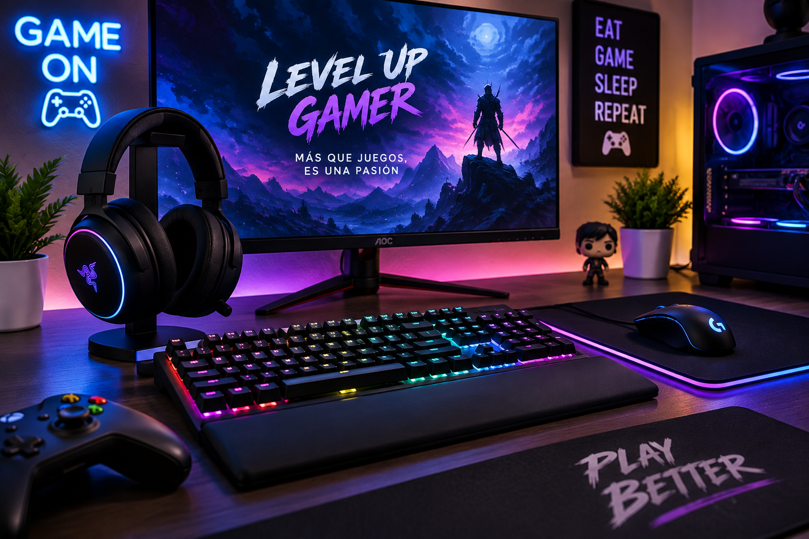

Cómo elegir los mejores periféricos para jugar

Elegir buenos periféricos puede mejorar bastante la experiencia al jugar. Elementos como el teclado, mouse, audífonos y monitor influyen directamente en la comodidad y precisión del jugador.
Un teclado mecánico puede ofrecer una respuesta más rápida, mientras que un mouse gamer permite ajustar la sensibilidad según el tipo de videojuego. También es importante contar con audífonos que entreguen un sonido claro y cómodo.
En Level-Up Gamer puedes encontrar distintos periféricos pensados para jugadores que buscan mejorar su espacio de juego y disfrutar una experiencia más completa.
Volver al blog